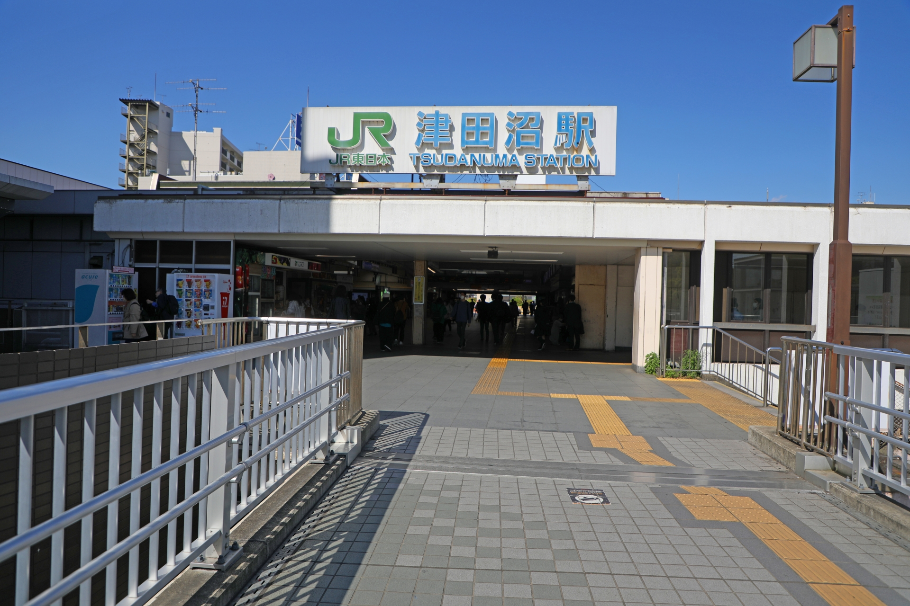

駅から歩いて、街を楽しもう
津田沼駅の周辺には、大学の空きコマや買い物の途中に立ち寄れる散歩スポットがあります。このサイトでは、公園や神社など、街を歩きながら楽しめる３つの場所を紹介します。
駅前から少し足をのばすと、普段とは違う景色に出会えます。気になる場所を選んで、それぞれの紹介ページを見てみてください。

津田沼駅の周辺には、大学の空きコマや買い物の途中に立ち寄れる散歩スポットがあります。このサイトでは、公園や神社など、街を歩きながら楽しめる３つの場所を紹介します。
駅前から少し足をのばすと、普段とは違う景色に出会えます。気になる場所を選んで、それぞれの紹介ページを見てみてください。